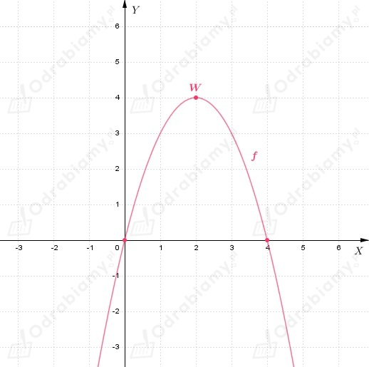

| 1) Jeśli funkcja f w pewnym przedziale (a, b) jest rosnąca i ma pochodną, to f'(x) ≥ 0 dla każdego x ∈ (a, b). 2) Jeśli funkcja f w pewnym przedziale (a, b) jest malejąca i ma pochodną, to f'(x) ≤ 0 dla każdego x ∈ (a, b). |
Wiemy, że:
Zapisujemy wzór funkcji f w postaci kanonicznej:
Odczytujemy współrzędne wierzchołka paraboli:
Ramiona paraboli są skierowane w dół, ponieważ współczynnik a=-1.
Wyznaczamy miejsca zerowe funkcji kwadratowej:
Szkicujemy wykres funkcji f:

Możemy odczytać, że:
1. Funkcja f jest rosnąca w przedziale:
2. Funkcja f jest malejąca w przedziale:
Pochodną funkcji f jest funkcja:
zatem dla:
1.
zachodzi nierówność:
2.
zachodzi nierówność: